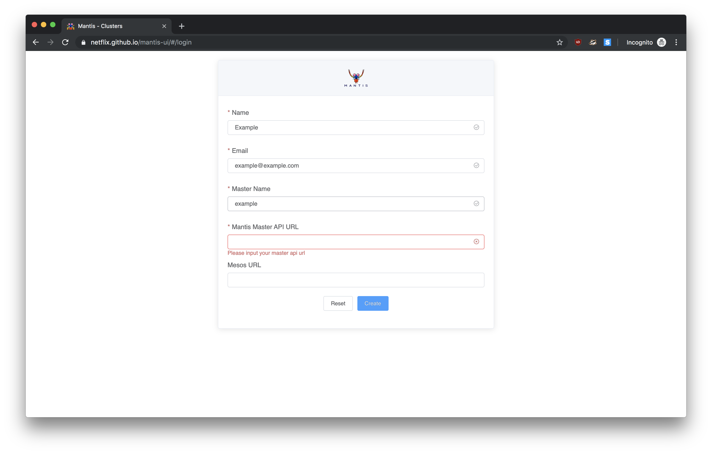
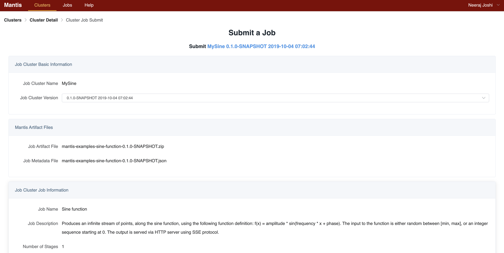
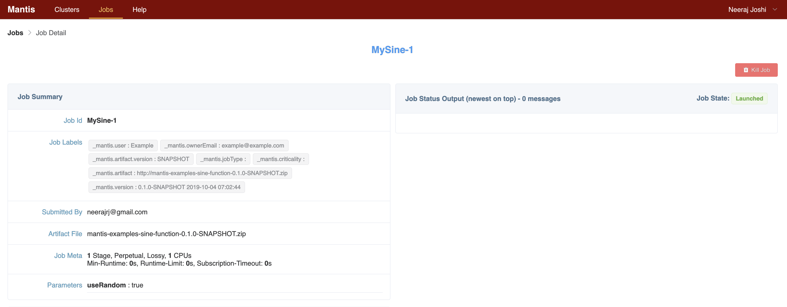
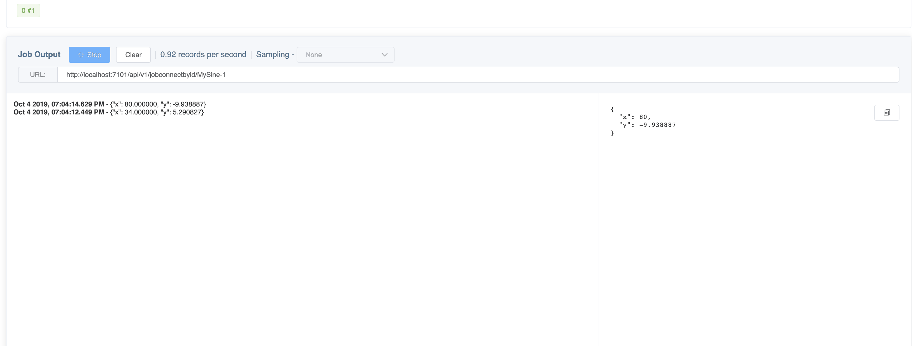

Spinning up your first Mantis cluster using Docker¶
Prerequisites¶
Install Docker for Mac
Bootstraping your first Mantis Cluster in Docker¶
Build a Docker image for Mantis Control Plane (Master)¶
Clone the Mantis Control Plane:
$ git clone https://github.com/Netflix/mantis-control-plane.git
$ cd mantis-control-plane/
$ ./buildDockerImage.sh
Build Docker image for Mantis Worker¶
Clone the main Mantis repository:
$ git clone https://github.com/Netflix/mantis.git # Set an environment variable called MANTIS_INSTALL_DIR to the root of this project $ export MANTIS_INSTALL_DIR=/Users/user/mantis
Clone the Mantis examples:
$ git clone https://github.com/Netflix/mantis-examples.git
# Create a sine-function artifact $ cd mantis-examples/ $ ./gradlew clean mantis-examples-sine-function:mantisZipArtifact # Copy to conf/ that is mounted on the mantis worker Docker image $ cp sine-function/build/distributions/mantis-examples-sine-function-0.1.0-SNAPSHOT.zip <path to mantis repo>/localdev/conf/ # Build the Worker docker image $ cd <path to mantis repo>/mantis-server/mantis-server-worker $ ./buildDockerImage.sh
Build Docker image for Mantis API¶
Clone the Mantis API project:
$ git clone https://github.com/Netflix/mantis-api.git
$ cd mantis-api/
$ ./buildDockerImage.sh
Start the Mantis cluster¶
$ cd <path to mantis repo>
$ docker-compose -f docker-compose-new-master.yml up
This starts up the following Docker containers:
- Zookeeper
- Mesos Master
- Mantis Master
- Mantis API
- Mesos Slave and Mantis Worker run on a single container (mantisagent)
Create and submit the sine-function Job Cluster via CLI¶
$ curl -X POST http://127.0.0.1:8100/api/namedjob/create --silent --data @$MANTIS_INSTALL_DIR/localdev/conf/namedJob-template -vvv $ curl -X POST http://127.0.0.1:8100/api/submit --silent --data @$MANTIS_INSTALL_DIR/localdev/conf/submitJob-template -vvv
To get a shell on a running container:
$ docker exec -it mantis_mantisagent_1 bash # Job logs can be found here. $ cd /tmp/mesos_workdir/slaves/<frameworkid>/frameworks/MantisFramework/executors
Using the Mantis UI¶
Clone the Mantis UI project:
$ git clone https://github.com/Netflix/mantis-ui.git
Run the following commands (in the root directory of this project) to get all dependencies installed and to start the server:
$ yarn $ yarn serve
Once the node server is up it should print something like
App running at: Local: http://localhost:8080/
Point your browser to the above URL and fill out the Registration form as follows

- Name:
Example - Email:
example@example.com - Master Name:
Example - Mantis API URL:
http://localhost:7101 - Mesos URL:
http://localhost:5050
Click on Create
The Mantis Admin page should have no Job clusters currently.
Create a new Job Cluster
Click on the Create New Job Cluster button on the top right.
Specify the cluster name as MySine
Click on Upload file and drag and drop the these two files
mantis-examples/sine-function/build/distributions/mantis-examples-sine-function-0.1.0-SNAPSHOT.zipmantis-examples/sine-function/build/distributions/mantis-examples-sine-function-0.1.0-SNAPSHOT.json
Under the section Stage 1 - Scheduling Information click on Edit and reduce the Disk and Network requirements
for this worker to 10 and 12 respectively.
Under the section Parameters click on Override Defaults
Here you can override values for Job parameters. Let us override the parameter useRandom to true
Click Create Job Cluster on the bottom left
This will create the job cluster
Now let us submit a new Job for our Job Cluster
Click the Submit green button this will open up a submit screen that will allow you to override Resource configurations
as well as parameter values.

Let us skip all that and scroll directly to the bottom and hit the Submit button on the bottom left.

View output of the job
If all goes well your job would go into Launched state.

Scroll to the bottom and in the Job Output section click on Start
You should see output of the Sine function job being streamed below
Oct 4 2019, 03:55:39.338 PM - {"x": 26.000000, "y": 7.625585}

- To teardown the Mantis cluster, issue the following command
$ cd <path to mantis repo>
$ docker-compose -f docker-compose-new-master.yml down